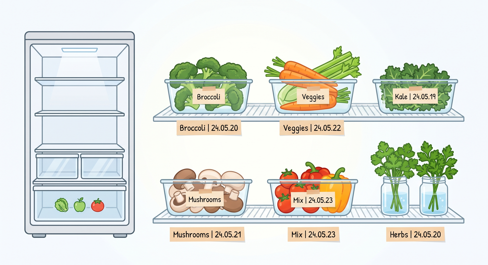

화면 테마 설정
눈이 편한 밝기 모드로 화면을 전환합니다.
자취생 식재료 유통기한 관리와 남은 재료 맞춤 레시피
냉장고 속 식재료를 등록하면 유통기한 임박 순서로 정리해 주고, 남은 재료로 만들 수 있는 요리를 추천해 드립니다.

빨리 먹어야 하는 식재료를 맨 위에 보여주어 낭비를 막아줍니다.
냉장고에 있는 재료만 선택하면 바로 만들 수 있는 간편 요리를 제안합니다.
재료가 상하기 전 미리 이메일 및 앱 알림을 보내 요리 타이밍을 놓치지 않게 해줍니다.
눈이 편한 밝기 모드로 화면을 전환합니다.
0 / 10 자
질문을 클릭하거나 Enter 키를 눌러 보관 방법을 확인하세요.
남은 두부는 밀폐 용기에 담고 두부가 잠길 정도로 생수와 소금 반 꼬집을 넣어 냉장 보관하세요. 물을 하루 한 번 갈아주면 최대 4~5일까지 신선합니다.
대파는 물기를 완전히 닦아 키친타월로 감싼 뒤 밀폐 용기에 세워 보관하거나, 송송 썰어 냉동 보관하면 요리할 때 바로 꺼내 쓸 수 있습니다.
유통기한은 매장에서 판매할 수 있는 기한이고, 소비기한은 보관 방법을 지켰을 때 안전하게 먹을 수 있는 기한입니다. 보관 상태를 확인해 낭비를 줄여보세요.
전체 2개의 식재료가 있습니다.
조회된 식재료가 없습니다.
식재료명: -
카테고리: -
보관장소: -
유통기한: -
냉장고 목록에 정상적으로 추가되었습니다.
보관 방식과 원하시는 알림 채널에 맞춰 유통기한 정보를 보내드립니다.